LaserCube Academy · Beginner
LaserOS basics: your logo, text and effects
Eight short lessons on making your own content look good in LaserOS: the Laser button, fitting the picture to your wall, effects and colours, a logo that draws itself, your own text and logo, smooth pictures without flicker, playlists and Autoplay, and a MIDI controller. Pass the final quiz and download your certificate.
Course contents0 of 8 lessons done
The questions, the final quiz and the certificate need JavaScript. Without it you can still read every lesson below.
Before you start
How this course works
LaserOS is our app for making your own laser content and playing it on your LaserCube. This course shows you its basic tools, so your logo, your text and the built‑in content look their best on your Ultra MK2 or Pro.
By the end you can
- find the apps, effects and settings in LaserOS, on a computer and in the phone app, and start and stop the laser from it;
- fit the picture to your wall, and read the cube’s model, firmware and battery level in LaserOS;
- know how the cube makes its colours, add effects, choose colours, and fix content that shows in one colour only;
- make content move, flash or draw itself with Movement, Strobe and Trace;
- project your own text, and import your own logo on a computer or a phone;
- stop a picture from flickering, collect your content in playlists and play it with Autoplay;
- run LaserOS from a MIDI controller.
What you need
- Your cube in LaserOS control mode, connected to LaserOS, as in Start here, lesson 7.
- LaserOS on a Windows or Mac computer, or on an iOS or Android phone. Get it from laseros.com.
- Use LaserOS 0.18.1 or later. Most screens in this course are from LaserOS 0.18; the few from an older version say so in their captions. Menus can differ slightly in other versions.
How the lessons work
- Each lesson takes about 5 minutes, plus any video. It has the key points and a few questions, and most have a video or pictures. Get a question wrong? Pick another answer.
- Your progress is saved in this browser. There’s no account and nothing is sent to us. Clearing your browser data, or switching to another device, starts the course again.
- When all eight lessons are done, take the final quiz: 10 questions, 8 right to pass, as many tries as you need.
- Pass, then download your certificate as a PDF or an image.
Every rule from the Start here course applies whenever the laser is on: the beam block set before the show, every beam at least 3 m (10 ft) above people, every beam and where it lands in view of someone who can stop the laser, a main and a backup way to stop it, only people trained in laser safety at the controls, and never leaving a running laser unattended. If you haven’t done that course yet, start there.
Sources: the LaserCube Ultra MK2 & Pro manual, above all its chapter Making Content in LaserOS, and our video tutorials. If a video and the manual differ, follow the manual.
Completed
Lesson 1 of 8
Find your way around LaserOS
With the cube in LaserOS control mode, LaserOS streams what it shows to the cube. Here’s where everything is, and how to start and stop the laser.
The screen
- On a computer: the preview and the main controls are on the left. Next to them is the list of apps, such as Abstracts, Visualizers, Dancers, Animations, Beam Show, Images, Text, Timeline, Draw, Beam Creator and Import, with Settings at the top. The open app fills the middle, and the effects are on the right.
- In the phone app: the apps are tiles on the main screen, and the controls are in the bar at the bottom. The effect name (No Effect) is at the top, and the gear at the top right opens the settings.
- In an app, the phone app’s player bar, just above the bottom bar, shows the name of the item you picked. The gear at the left of the player bar opens that item’s own options (lessons 6 and 7), not the settings.
![From one of our tutorial videos: LaserOS on a computer. At the top left, the LASER ON button above the preview, with FPS: 39 at the preview’s top left. Under the preview, the Autoplay buttons (shuffle, repeat, 5s) and the left panel: Global Power, Power, Effects (No Effect), Speed (Manual), Manual, Zoom, Rotate and Trace (off). Next to it, the list of apps with Settings at the top: Abstracts, Visualizers, Dancers, Animations, Beam Show, Images, Games, Clock, Playlists, Text, ILD Laser Shows, Timeline, Oscope, Draw, Midi, Harp, Keyboard, E-Drums, Beam Creator, Light Painting, Import and Cast. Beam Show is open in the middle, and the effects panel, with No Effect, Image Effects, Color Effects and Saved Effects, is on the right.](../../images/academy/laseros-basics/l1-layout-1292.webp)
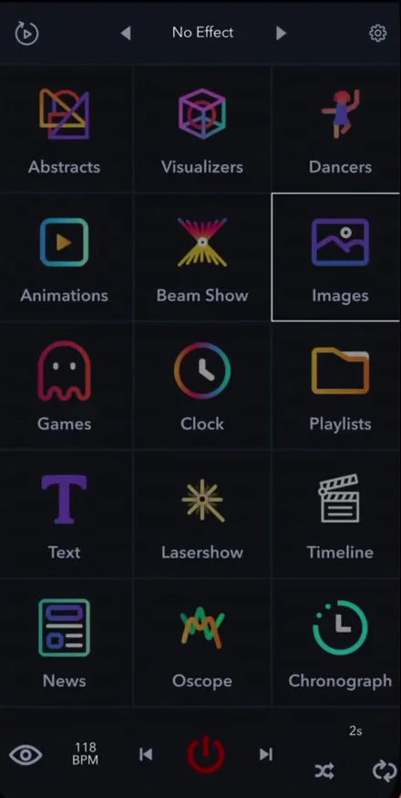
The Laser button

On a computer, the Laser button at the top left shows whether LaserOS can send to a cube:
- NO LASER: LaserOS hasn’t found a cube. Close LaserOS, connect the cube, then start LaserOS again.
- LASER OFF, with a red power symbol: a cube is found and the laser is off. Click the button to start.
- LASER ON: LaserOS is projecting. Click the button, or press Esc, to stop.
- In the phone app, the power button is in the middle of the bottom bar: red when the projection is off, blue when it’s on.
- The cube only projects when it’s armed: the interlock closed and the key on, and with an E‑Stop connected, the E‑Stop started (Start here, lesson 6). If it isn’t, LaserOS shows the message “Interlock is not enabled on cube”.
Set the beam block first, so every beam stays at least 3 m (10 ft) above people (Start here, lesson 8). To stop the laser, click the Laser button or press Esc in LaserOS. On the cube, turn the key to OFF. On the E‑Stop, press the big red button.
The left panel on a computer
- Under the preview are the Autoplay buttons (lesson 7) and sliders such as Global Power, Power, Speed, Zoom and Rotate.
- While a tool such as Trace or Strobe is on, the preview shows its name in a small tag (lesson 4).
- To put a switch or slider from Settings on the left panel, hold Shift and drag it there. It stays in step with the one in Settings. To remove it, drag it off the panel onto the bin.
- Right‑click a switch on the panel to give it a keyboard key or an APC controller pad, then press the key or pad. Backspace removes it.
- Right‑click a slider to type an exact value.
Check yourself
In the manual: The LaserOS screen·The Laser button·Left panel and quick controls·Enabling the E‑Stop / interlock
Lesson complete. On to lesson 2.
Completed
Lesson 2 of 8
Fit the picture to your wall
In LaserOS control mode, LaserOS handles the image setup, the colour balance and the safety zone. The cube greys out its own entries for them, so you set them in LaserOS.
Projector Setup
- On a computer: open Settings → Projector Setup. A drop‑down at the top switches between pages such as Info, Image, Color Balance and Safety Zones.
- Next to it, the device list shows the connected cube, with a Use This Device switch.
- In the phone app: tap the gear at the top right. Image Setup and Safety Zone are buttons on the Projector Setup page.
![From one of our tutorial videos: Settings → Projector Setup in LaserOS on a computer, with Projector Setup selected in the Settings list (Projector Setup, Audio, Speed, Midi, Color, Colorize, Tools, Video Input, Apps, General). At the top: Test Pattern set to None, the page drop-down on Color Balance, the device list showing a Network Laser with its ID blurred, and Use This Device ON. The Color Balance page below has Preview, Max R, G and B, Min R, G and B, Gamma R, G and B, and TTL Mode, here ON.](../../images/academy/laseros-basics/l2-projector-setup-830.webp)
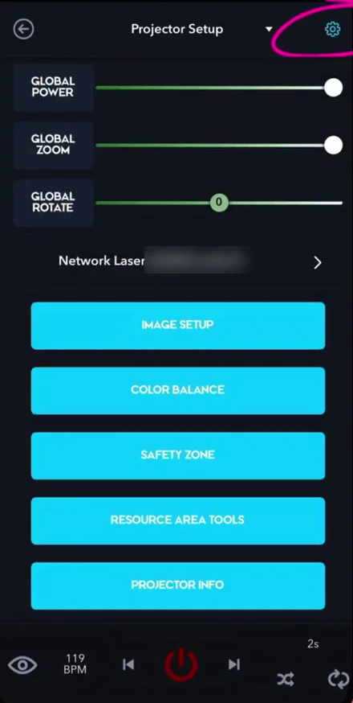
Info
Info shows the connected cube’s model name and firmware version, its temperature and battery level, the connection mode, and whether the interlock is enabled.
Image: size and position
- Image sets the size and position of the whole picture: Zoom X and Y, Position X and Y, Rotate, Flip X and Flip Y, and the keystone corners.
- With Lock Zoom X‑Y on, both zoom sliders move together. Turn it off to change only the width or only the height.
- The Test Pattern list at the top of Projector Setup has a Square that shows the whole projection area.
The beam block and the 3 m rule apply whatever the picture’s size and position (Start here, lesson 8).
Safety zones are here too
- Safety Zones is another Projector Setup page. In the phone app, it’s Safety Zone on the Projector Setup page.
- Attenuation Zones switches the zones on. With Invert Zones off, a zone is keep‑within, with a green outline; with it on, keep‑out, with a red outline. You can add several zones; where they overlap, red has priority.
- What each kind of zone is for is in Start here, lesson 8. A zone works on top of the beam block and the 3 m rule, never instead of them, and the laser must never be aimed at people.
Check yourself
In the manual: Projector Setup in LaserOS·Projector Info·Image settings·Safety zones in LaserOS·Hardware installation
Lesson complete. On to lesson 3.
Completed
Lesson 3 of 8
Effects and colours
Effects change how anything looks while it plays. The Color settings decide its colours, and they’re the first place to look when everything shows in one colour. First, how the cube makes its colours.
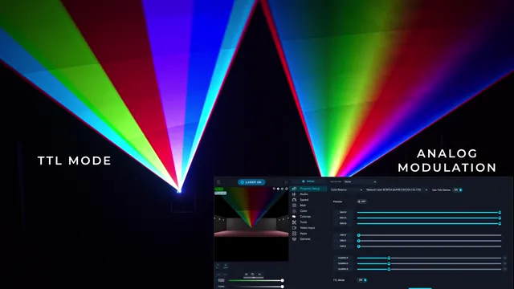
Later in the full video, our team opened a cube to show what’s inside. Never open yours: the manual doesn’t allow it (guideline 1; Connect, lesson 8).
How the cube makes its colours
- The cube has laser diodes in three colours: red, green and blue. It mixes them into one beam before the beam leaves the cube.
- Every LaserCube uses analog modulation: the brightness of each colour can change smoothly, so you get smooth gradients and colour fades.
- A TTL projector can only switch each colour fully on or off. That gives 8 combinations (black, red, green, blue, yellow, magenta, cyan and white) and no smooth fades.
- On a computer, LaserOS has a TTL Mode switch on the Color Balance page of Projector Setup (lesson 2, where it’s in the first picture), for compatibility with TTL projectors. It’s set for each cube: pick the cube in the device list first. With it on, the cube’s colours jump in hard steps; with it off, they fade smoothly.
Add an effect
- On a computer: the effects panel on the right has four tabs: No Effect, Image Effects, Color Effects and Saved Effects.
- An effect plays on top of whatever is showing: an animation, your logo, a drawing or a Beam Creator design.
- The left panel shows the effect in use, with a button to reset it.
- In the phone app: tap the effect name at the top of the screen (it reads No Effect) and pick one. The arrows next to the name step through the effects.


Where the settings are
- On a computer, Settings at the top of the list of apps has Projector Setup, Audio, Speed, Midi, Color, Colorize, Tools, Video Input, Apps and General.
- In the phone app, tap the gear at the top right. Tap the page title at the top to choose another page: Projector Setup, Audio, Color, Colorize, Movement, Strobe, Trace, Video Input, Apps or General.
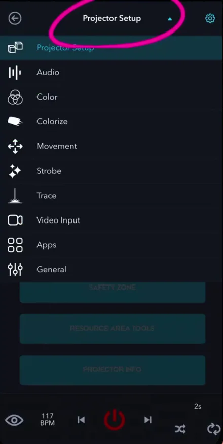
Colours
On a computer, Settings → Color has these settings:
- Single Color: Off, White, Red, Green or Blue.
- Hue, Mono Color and Shift Color, and Fader R, G and B.
- Single Color and Mono Color each turn all the content into one colour. Hue, Mono Color and Shift Color only work while Single Color is Off: with Single Color set to a colour, they’re greyed out.
- Once you move Mono Color, a Saturation slider appears below it.
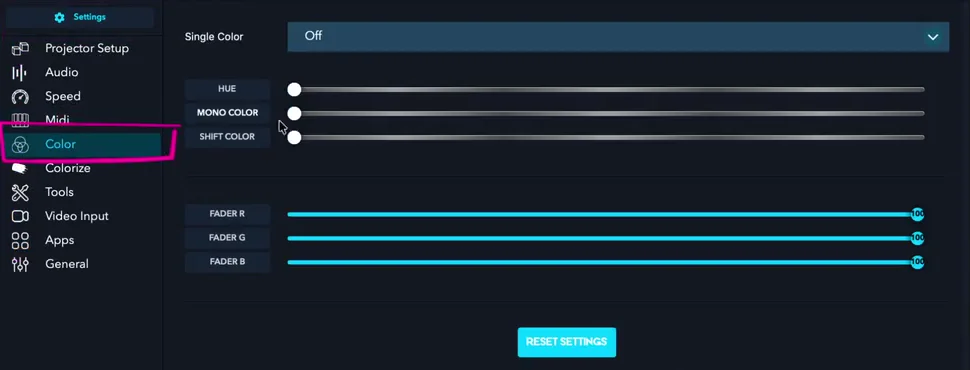
Everything in one colour? Check that Single Color is Off, that Mono Color and Shift Color are all the way to the left, and that Fader R, G and B are turned up. Or click Reset settings at the bottom of the Color page.
Colours jump in hard steps instead of fading? Check that TTL Mode is off, on the Color Balance page of Projector Setup.
Check yourself
In the manual: LaserOS effects·LaserOS settings·Mono Color·Projector Setup in LaserOS·Technical specifications
Lesson complete. On to lesson 4.
Completed
Lesson 4 of 8
Movement, Strobe and Trace
Three tools change how content plays. Movement makes it travel and turn, and Strobe flashes it: both work on any content. Trace makes it draw itself: it works on images, animations and your own logo (SVG or ILD). With other content, such as a visualizer or text, its switch is greyed out.
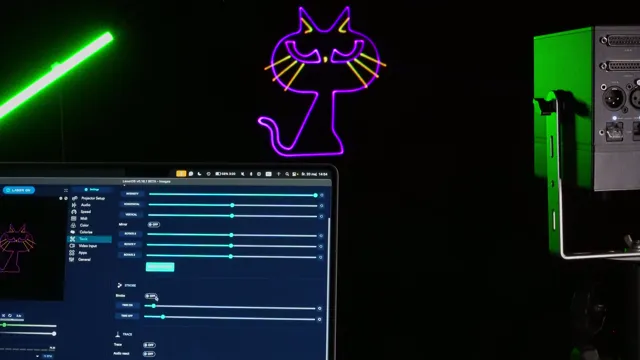
Where they are
- On a computer: Settings → Tools.
- In the phone app: tap the gear at the top right, then tap the page title at the top and pick Movement, Strobe or Trace.
Movement
- Horizontal and Vertical move the picture sideways and up and down. In the middle position, it stands still.
- Rotate X, Y and Z turn it around each axis.
- The page also has Intensity and Mirror. Reset settings puts everything back.
Wherever it moves: the beam block and the 3 m rule apply whatever the picture’s size and position (Start here, lesson 8).
Strobe
Strobe switches the picture on and off. Time On and Time Off set how long it stays on and how long it stays off.
Trace: a logo that draws itself
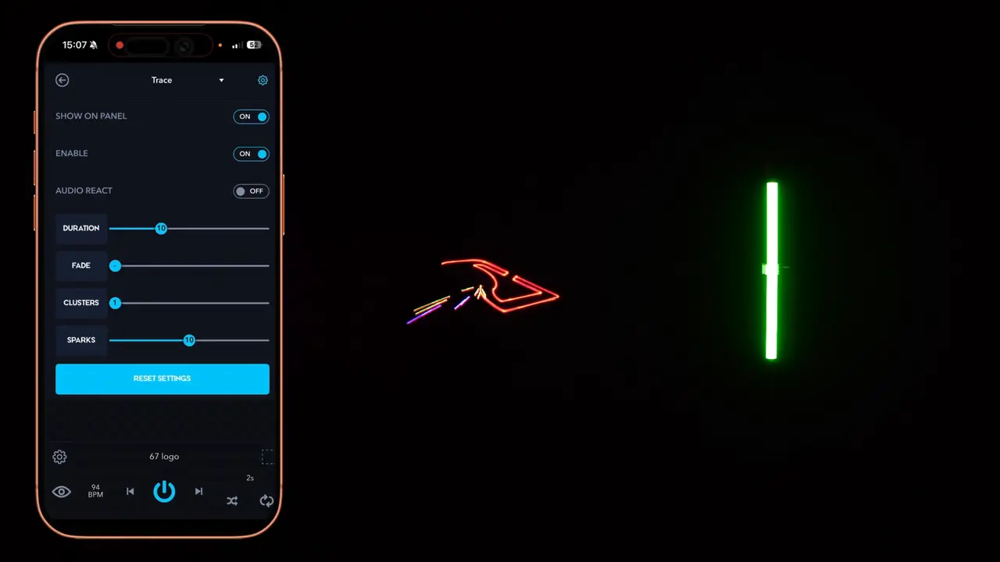
- Switch Trace on and it starts at once. On a computer, the preview shows a small Trace tag while it’s on.
- Its settings are Audio react, Duration, Fade, Clusters and Sparks.
- Clusters sets how many points the drawing starts from.
- With Sparks at 0, only the logo is drawn, with no sparks.
- In the phone app, the Trace page has Enable to switch it on, and Show on panel, which adds a small on/off button next to the name of the playing item.
- On a computer, put the Trace switch on the left panel or give it a key, for quick on and off during a show (lesson 1).


Check yourself
In the manual: Movement, Strobe and Trace·Movement·Strobe·Trace
Lesson complete. On to lesson 5.
Completed
Lesson 5 of 8
Project your own text
The Text app projects your own words: a name, a greeting, or a message that scrolls across the wall.
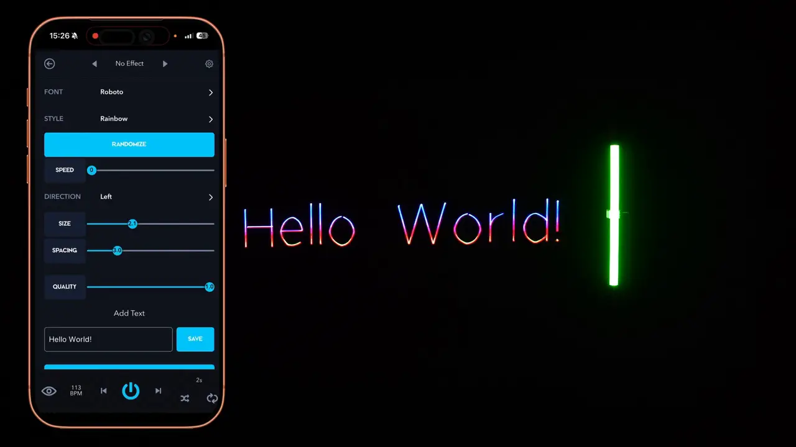
Write it
The steps in this lesson are the phone app’s, as in the manual and the video. On a computer, Text is in the list of apps too.
- Open Text. In the phone app, type in the Add Text box. With the laser on, the cube shows each letter as you type.
- Font: the typeface.
- Style: Gradient, Striped, Rainbow, 3D, 3D rotate or No Style.
- Size and Spacing: the size of the letters, and the gap between them.
- Speed and Direction (Left, Right, Up or Down) make the text scroll.
Keep it
- Save keeps the text under a name, in Playlists → Saved Texts.
- In a playlist for the cube’s SD card, a scrolling text can play once and then move on. On a computer, right‑click it in the playlist, turn on Assign Duration and choose 1 cycle (Control modes, lesson 2; the right‑click menu is pictured in lesson 6 of this course).
Check yourself
In the manual: Projecting text·Where your content is saved·Duration and cycles in a playlist
Lesson complete. On to lesson 6.
Completed
Lesson 6 of 8
Import your logo and stop the flicker
Bring your own logo into LaserOS, from a computer or a phone. Then make sure it plays smoothly.
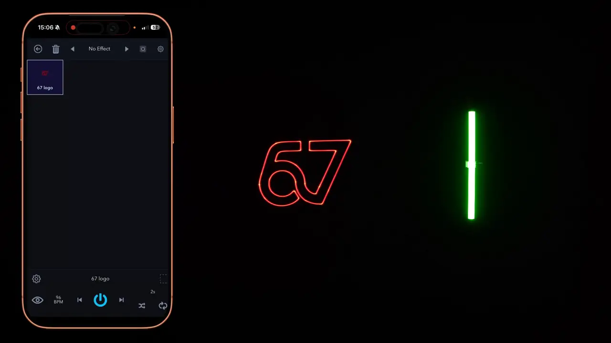
On a computer
- Open the Import app, pick the playlist the logo should go into, then click the import files button and choose the file.
- SVG or ILD files give the best results.
- A PNG or JPG is first turned into lines, in a window where you adjust the sensitivity, the line length and more, with a live preview.
- For an animated SVG, use the button to import a folder with an SVG animation instead.
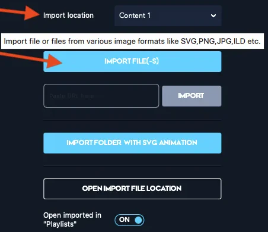
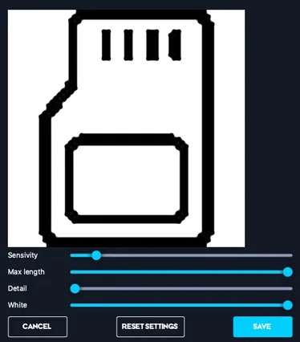
In the phone app
- Scroll down the main screen to Import.
- Import location sets the playlist the file goes to: Imported, unless you pick another.
- Tap Import… and pick the file in the phone’s file browser. You can also paste a file’s web address under Import from URL.
- With Open imported in “Playlists” on, the logo opens straight away. Tap it to play it.
Movement, Strobe, Trace and the effects all work on your logo (lessons 3 and 4).
Flicker and render quality
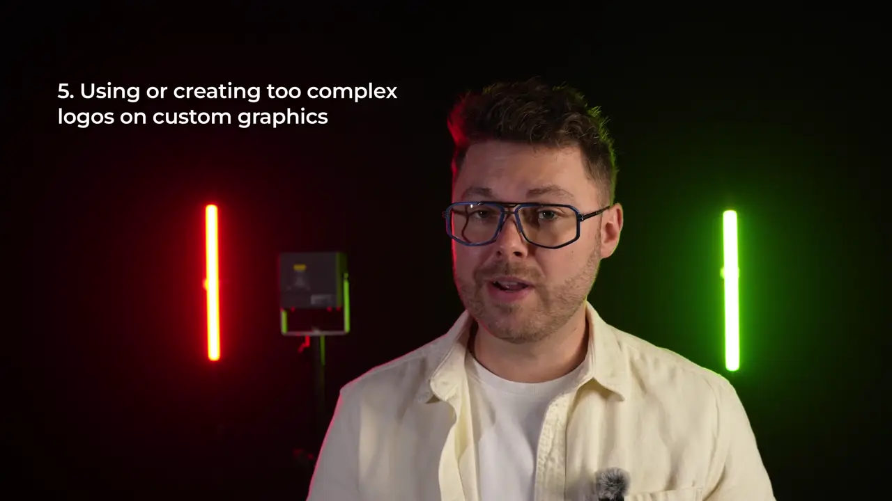
- The cube draws the picture with two fast‑moving mirrors, the scanners. They can draw only so many points per second: more than 35,000 at a 7° scan angle, by the manual’s specifications. Content with too much detail flickers, or looks distorted, with rounded corners.
- To check, turn on Show FPS in simulator window in Settings → General. The preview then shows the frames per second (FPS) at its top left, as in the picture in lesson 1. At 45 FPS or more, it won’t appear to flicker.
- Render quality: lower it if the item flickers. Raise it if corners look rounded, but that can add flicker.
- On a computer, right‑click the item and turn on Assign Render Quality. In the phone app, tap the gear at the left of the player bar, turn on Assign Quality and move Render Quality.
- Still flickering? Simplify the logo, make the picture smaller, or split it over more than one cube.
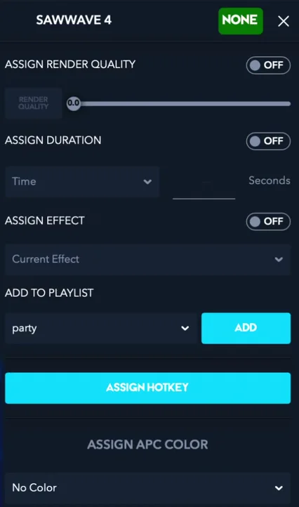
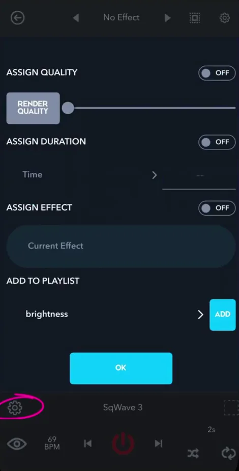
Check yourself
In the manual: Importing your own logo·Adding your own SVG·Flicker and render quality·Technical specifications
Lesson complete. On to lesson 7.
Completed
Lesson 7 of 8
Playlists and Autoplay
Collect your favourite content in a playlist, then let Autoplay move through it for you.
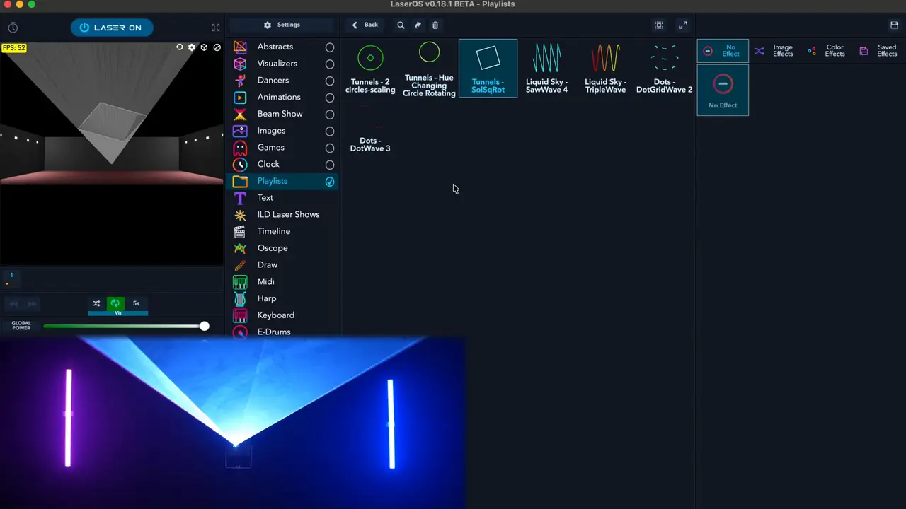
Where your content is saved
LaserOS keeps what you make in the Playlists app: Drawings (from Draw), Custom Beams (from Beam Creator), Saved Texts (from Text), Imported (files imported in the phone app, unless you pick another playlist) and your own playlists. It also holds ready‑made playlists, such as Demo Beams.
Add to a playlist
- On a computer: right‑click an item, pick your playlist under Add to playlist and click Add (the right‑click menu is pictured in lesson 6). To make a new playlist, click the small + in the Playlists app and save it.
- In the phone app: touch and hold an item (or select it and tap the gear at the left of the player bar), then open Add to playlist. Pick a playlist, or choose Create new playlist and give it a name, then tap Add.
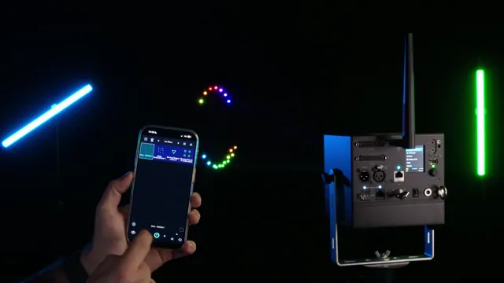
- To play it, open Playlists and tap your playlist.
- A playlist made on the phone plays from the phone. To put a playlist on the cube’s SD card, you need LaserOS on a computer (Control modes, lesson 2).
- In Playlist mode on the cube, the cube’s own Image Setup and Safety Zone apply, not the ones in LaserOS. Set them on the cube before you play (Control modes, lesson 1).
Autoplay
- Autoplay moves from one item to the next by itself.
- Its buttons are under the preview on a computer, and in the bottom bar on the phone: shuffle, repeat and the time per item (for example 3s). Click the time to set it in seconds or beats.
- The window that opens when you click the time also has a drop-down: Visuals only (animations), Visuals+Effects or Effects only. To mix content, switch on several folders, or tick several apps in the list of apps: repeat goes through them in order, shuffle at random.
- To autoplay one playlist only: open Playlists, then View options (the icon at its top right), and choose Toggle All → Disable. Click and hold your playlist for about two seconds to switch it back on. Then leave only Playlists ticked in the list of apps. In the phone app, Toggle All offers Select none instead of Disable.
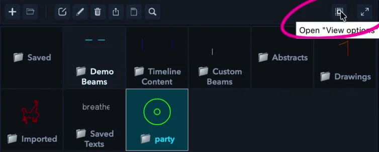
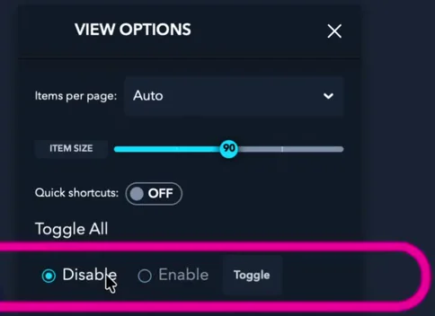
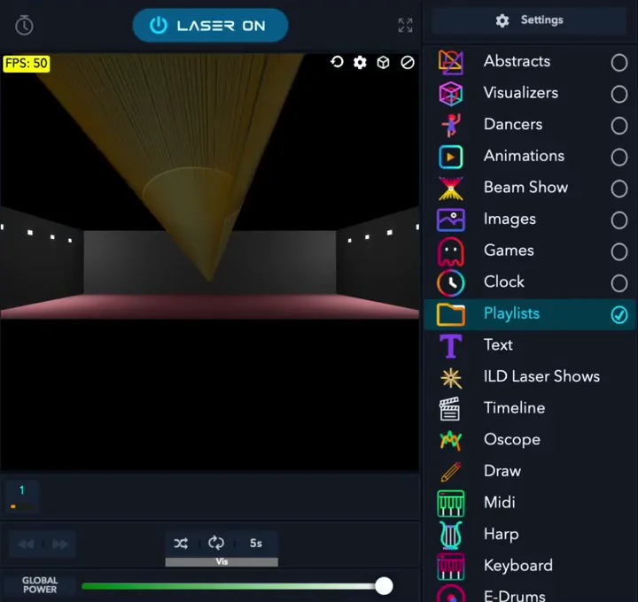
Autoplay changes the content for you, but a running laser is never left unattended, even with other crew around (Start here, lesson 3).
Check yourself
In the manual: Where your content is saved·Adding to a playlist·Autoplay·Creating a playlist·Playing your content on the cube
Lesson complete. On to lesson 8.
Completed
Lesson 8 of 8
A MIDI controller with LaserOS
Pads, faders and knobs let you play LaserOS live. In LaserOS control mode, the controller plugs into the computer that runs LaserOS, not into the cube.
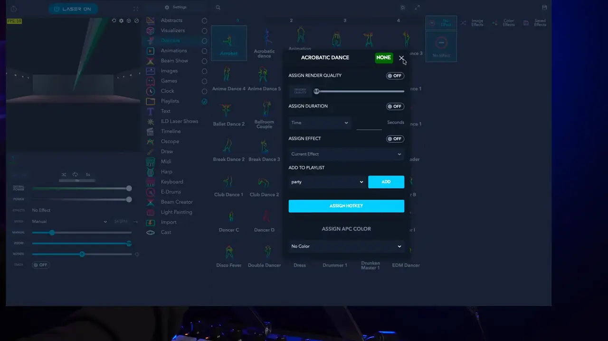
Connect it
- In LaserOS control mode, the cube’s own USB MIDI doesn’t work. Plug the controller into the computer that runs LaserOS instead.
- Open Settings → Midi. Under Input and Output, set Port to your controller. For an APC40 MK2 or APC mini MK2, also pick it under APC Model.

Map pads and faders
- Start an item from a pad: right‑click the item. Pick a pad colour under Assign APC Color if you like, click Assign Hotkey and press the pad (the right‑click menu is pictured in lesson 6). The item then shows the pad’s note.
- Move a slider from a fader or knob: right‑click the slider, click Link to MIDI Knob and move the fader. Backspace removes the link.
- Switches on the left panel can get a pad or a keyboard key too (lesson 1).
- In Playlist, Visualizer or Laser Show mode, a controller plugs into the cube’s own USB port instead (Control modes, lesson 8).
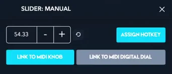
Safety: a pad can start other content, and a fader linked to a slider such as Zoom changes the picture while it plays. Whatever the controller sends, the beam block is your hard stop (Start here, lesson 8).
Check yourself
In the manual: MIDI controllers in LaserOS·Left panel and quick controls·USB MIDI settings
Lesson complete. Next: the final quiz.
Final quiz
Final quiz
10 questions picked at random, one from each of the course’s 10 topics. Get 8 right to pass. You can try as many times as you like.
Finish all eight lessons first. Still to do:
Certificate
Your certificate
Pass the final quiz to get your certificate. Go to the final quiz
Well done. Type your name as you want it on the certificate.
Your certificate is made right here in your browser. Your name isn’t sent anywhere; it’s only kept in this browser.

Download not starting? Press and hold the certificate (on a computer, right‑click it) and save the image.
This is a certificate of completion. It is not a licence, a Laser Safety Officer (LSO) qualification or permission to run public laser shows. Every rule from Start here’s pre‑show checklist applies whenever the laser is on.
Next course: Connect, update and troubleshoot your Ultra MK2 or Pro, to get connected, keep the firmware up to date and sort out common problems. All courses: LaserCube Academy.